Sample image of final design
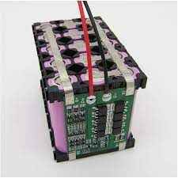
Final design
expected image of final pcb
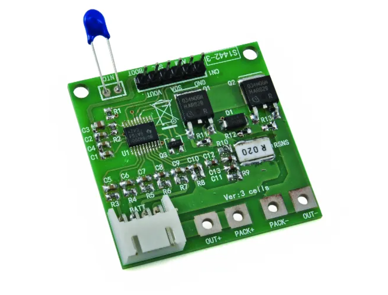
Final PCB
expected image of final project
.jpg)
Final PROJECT
expected image of cell enclosure
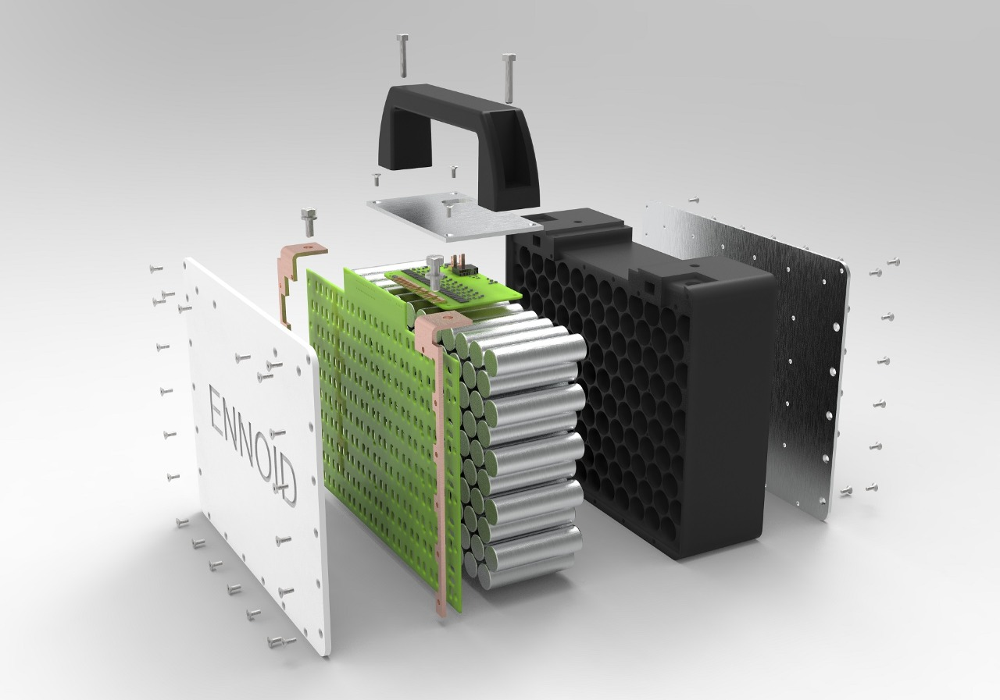
Mechanical Drawing
1 / 3

MECHANICAL DRAWING
2 / 3
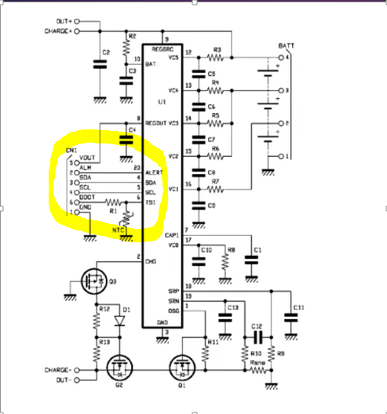
FROM DATASHEET
3 / 3
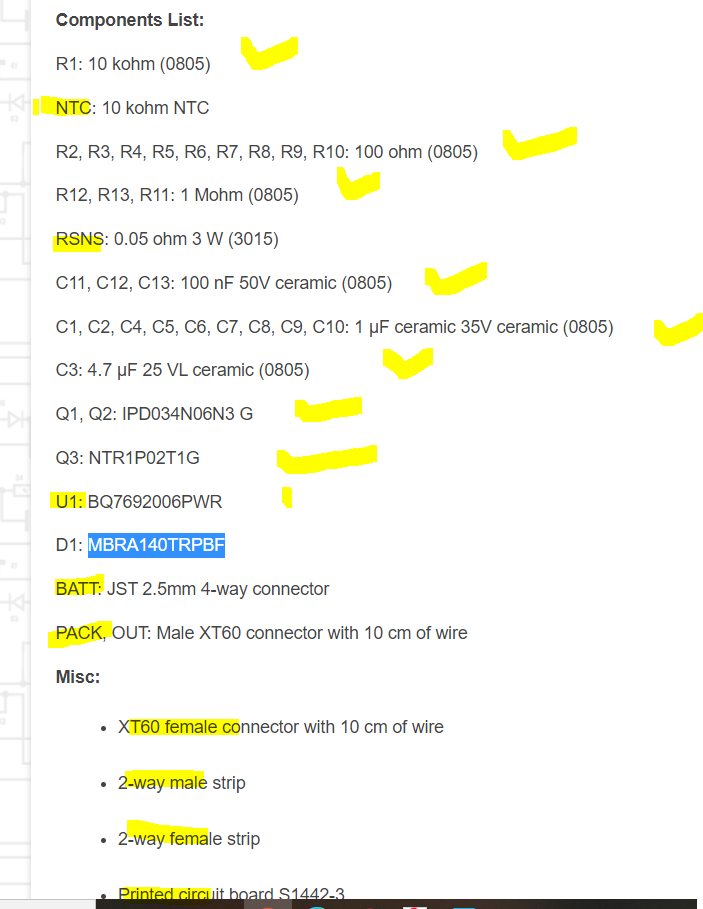
FROM BOM TABLE
❮
❯
Refer to datasheet:Below Link
Refer to datasheet of IC:
Distribution of task
We know that Individual commitment to a group effort, that is what makes a team work. "Talent wins games, but teamwork and intelligence win championships." --Michael Jordan.
We were 2 group members working on Battery Managemnet System of Li ion cells. Since the first day of our project, we both are being working togther.
In start, I was working on Electrical Schematic Design while my group member was working on understanding Datasheet of IC. Later on, we decided to perform each task together and work as a TEAM. "
Higher level system diagram
The interaction of bq76930 IC with microcontroller is shown in this figure.


 Bill of material
Bill of material

 PHASE II
Electrical Schematic and board layout:
PHASE II
Electrical Schematic and board layout:
Following the datasheet and mechanical drawing for connectivity of components, we prepare this Schematic Layout of BMS using bq76930 IC with the help of Sir Nadir.
1 / 3

1st pcb board
2 / 3

final pcb board
3 / 3

1st pcb board
❮
❯
Brief description of schematic::
In Eagle file, sometimes its hard to find the required ICS there. For this purpose, we have to add that particular IC library on Eagle. We did so in this schematic design also. Here the blue line shown is for microcontroller while red line is showing cells.
 PCB layout:
PCB layout:
Making schematic design is much more easier as compare to board layout and Routing. Its such a difficult task but not impossible and a precise work also. It can be seen in this picture that the IC terminals are like spiders web and hard to separate and join them correctly.
With the help of Sir Nadir, our pcb designed (both schematic and board) got prepared and thus we go towards our
Finalising traces of pcb before milling
1 / 7

Board layout initial step
2 / 7

1st pcb
3 / 7

FINAL PCB sch
4 / 7

traces of final pcb
5/ 7

traces of final 2
6/ 7

Me while finalising traces
7 / 7
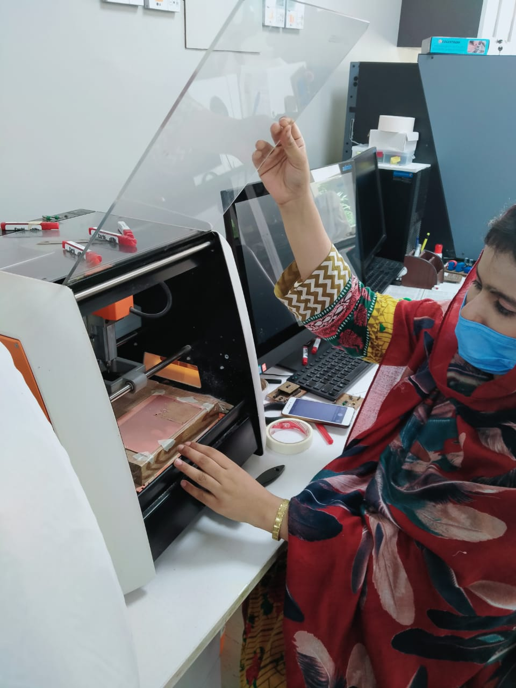
My grp mate while finalising traces
❮
❯
Picture of PCB board:
Front side of our pcb board:
Backside of our pcb board.For this pcb , we use FR 1(FIRE RESISTIVE) sheet for our pcb. It a light weighted board.
Our Final Pcb board made of FR 4 sheet(it a a little bit heavier than FR 1, its more qualitative and expansive than FR1)
1 / 6

1st pcb mil
2 / 6

1st pcb
3 / 6

final pcb milled
4 / 6

final pcb milled 2nd lay
5/ 6
.jpg)
Our 1st pcb board with some components
6/ 6
.jpg)
our soldering area
❮
❯
Soldering components on board(Connectivity of components)
Our first pcb board, it has two parts.
Left part is for bms which includes all the required components along with IC BQ76930.
Right part is for microcontroller which is Atmega 328P.
Me and my group mate while soldering components on PCB board.
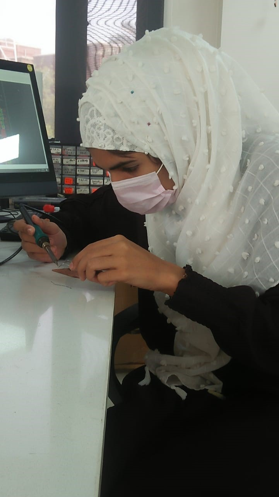
Finally we solder it. This is the picture of our PCB board along with soldered components.
 Challenges we faced and how we overcome them:
Challenges we faced and how we overcome them:
It was a rough testing of our project, after soldering when we connect our pcb board to arduino board and cells to check the cell volages of each individual cell, the output on screen was showing zero voltages for each cell.
We all got disappointed and depressed. We mustered up our courage and tried again, then we came to know that some MOSFETS models were not accurate. We took help from Texas Instruments and they suggested us the correct MOSFETS models, but there was no such big difference between their ratings, thue we decided to put these Mosfets also in Bill of material in additional use. Moreover, we detect that there were some components which were not soldered properply and as it was a two layer pcb , some vias were also not soldered properly. We correct our all mistakes and thus decided to make separate the microcontroller part from pcb and to design a new qualitative board.

We tried again and milled a new pcb. This time we milled pcb excluding microcontroller ATMEGA 328P part which was milled together on previous board. We did it soldering by ourselves. However, its IC was soldered by Sir Nadir. We ordered the required MOSFETS which were suggested by Texas Instruments, till they arrive, we solder the previous MOSFETS which are named in Bill of material table. Then we followed the same procedure ,connecting soldered pcb with arduino and cells through jumping wires. We run the arduino code on PC and this time it was showing results on screen.
The voltages of each single cell was shown on screen. We both group members were so happy that we were rewarded for our hardwork. Then suddenly when we were checking the voltages across each cell using DMM(digital multimeter meter) , our IC bq76930 got burned. Now this moment was a heart wrenching moment. We decided to desolder the IC and will replaced it with another, but again while doing desoldering, its one trace got removed, and our pcb again became useless. We also detect our another mistake, in the box of capacitors for 1uF, 10uF capacitors were there. But we did not know that, as it was mentioned on their white paper 1uF, that is why we solder it. Later on, our Sir detects our this mistake and told us it was mistakenly placed there. It was also one of the reason, why our IC burnt.

We did not lose hope and tried again. Tough our IC got burned but we were happy our that at least it showed us some results. Again we milled another pcb board and solder components on it. This time we placed all our components correctly. This is the picture of our final Pcb board

Now this is the picture of all 3 pcb boards. The centre board is the final board.

It was a rough testing of our project, after soldering when we connect our pcb board to arduino board and cells to check the cell voltages of each individual cell, the output on screen was;
 Help from TEXAS INSTRUMENTS:
Help from TEXAS INSTRUMENTS:
It was a rough testing of our project, after soldering when we connect our pcb board to arduino board and cells to check the cell volages of each individual cell, the output on screen was showing zero voltages for each cell.
It was a heart wrenching moment. We mustered up our courage and tried again, this time again it was showing the zero results.
When our output on screen was showing zero voltages for each cell,
We raised our problem on TEXAS INSTRUMENTS and they give us the following solution.


Texas instruments
FINAL PHASE
boot load:
In our first pcb, we used microcontroller and thus for this purpose we boot load it. Following are the images of boot load;
 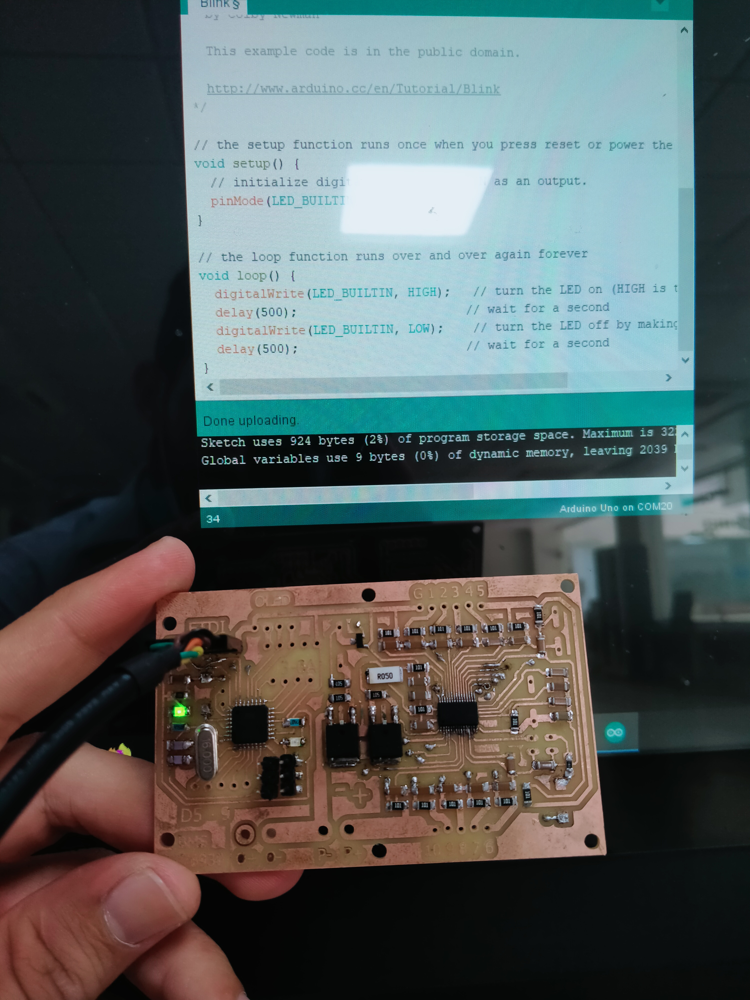
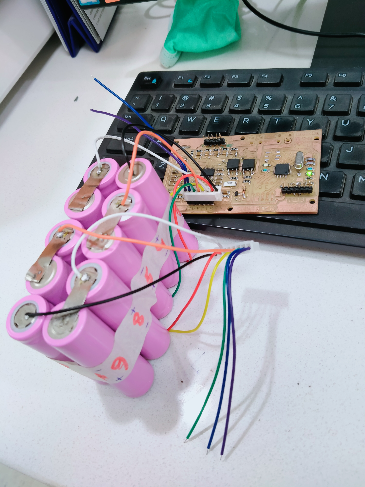
Arduino Code:
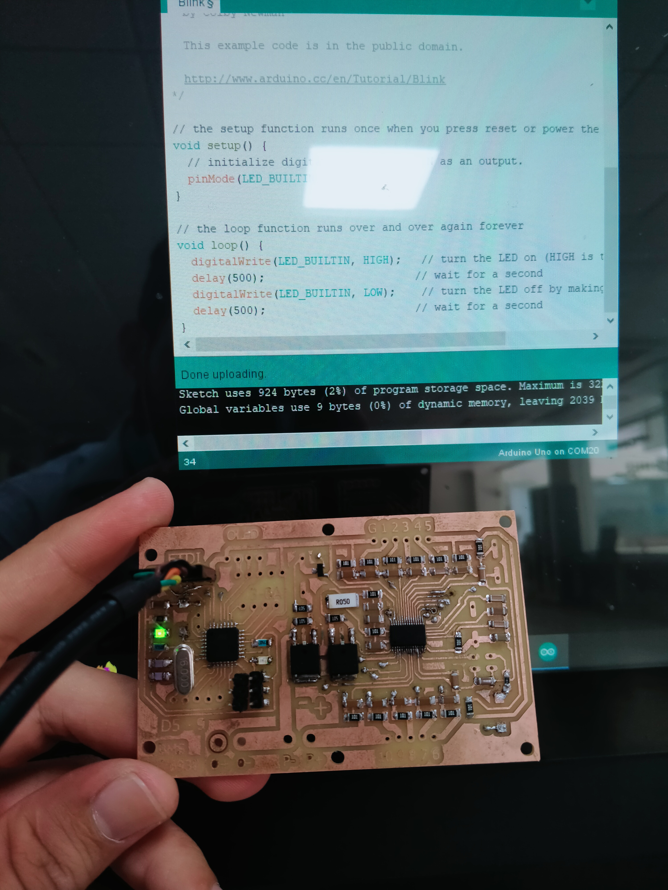
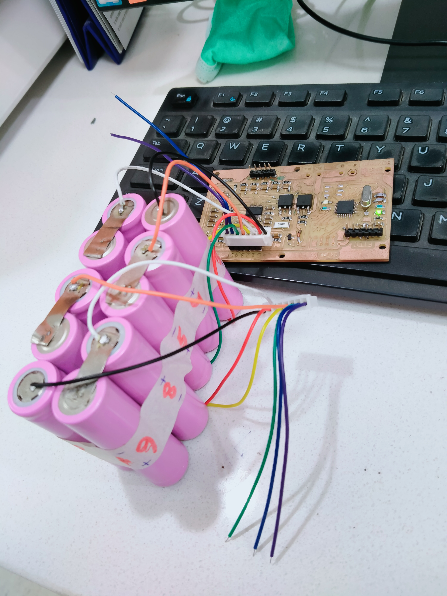
Arduino Code:
For Arduino code, Click on this
CAD MODEL for enclosure:
We were in search of an enclosure model for our cells. For this purpose, we select cell arrangement that is 5s2p arrangement of cells and we design this model in Solid Works. Its dimensions are

Cell welding and cell testing:
After making pcb board and its soldering, our next task was to conjoin them to form a single prototype. We selected 5s2p arrangement of our cells and thus selected total 10 lipo cells for our project. Thus for joining cells with the board, first of all we did cell welding with cell welding machine. We both group members did this as shown in figure and then we solder some connecting wires with it to connect it with PCB board
1 / 5
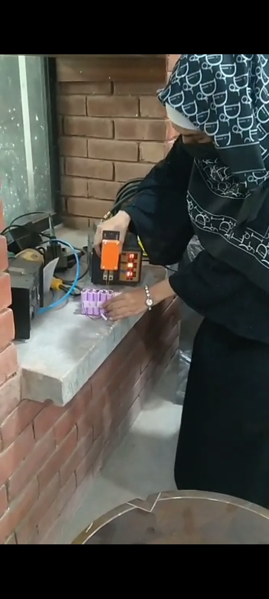
Me while cell welding
3 / 5

Cell welding
4 / 5
CELL testing
❮
❯
OUTPUT:
 Conclusion:
Conclusion:
Thus it is concluded that from this project we learnt new innovative ideas.We learned the basic fundamentals of Eagle while making schematic and board layouts for PCB. We profound studied BQ76930 IC datasheet ,soldering components on PCB, cell connectivity, boot loading, cell welding and CAD model in solid works.To do a remarkable and outstanding project, it is vital we take consistent action in spite of our fears and doubts. No doubt, It is true that our 2 Ics got burnt, but we we learned two new ideas not to soldet that IC in such a way.
We learned from our mistakes. Though, our project took some time, but If we rushed the project in search of achieving our goals in the shortest amount of time, We might not learned from the experiences along the way. It was a journey of minor mistakes. We correct them and it saved us from big failures.When our IC got burnt, we felt ourselve in the thick of spilled milk journey. We learned that for the replacement of components, one should refer their datasheets first. Different Models of MOSFETS( N channel and P channel) are used, their currents aur voltage ratings matters alot. IC BQ76930 is so small, its all terminals are tiny and need more attention when soldering it on pcb. Arranegemnet of Cells matters, either they are connecting in parallel or in series, we selected 5s2p arrangement. Thus in last ,we learned the main function of BMS and cell individual monitoring and voltages shown on output console.
Refrences
BMS(Open electronics)
BMS(TEXAS INSTRUMENTS)
About BMS
About BMS
"THE END"
"THANK YOU"


{kind=link}